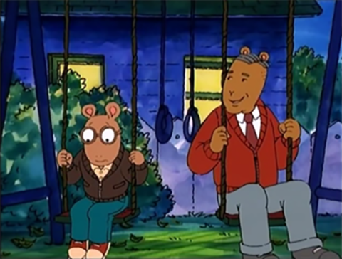

Where did the idea of Arthur come from?
It was a bedtime story that I told my son Tolin on a very bad day. I had just lost my teaching job in Boston and came home that night and just wanted to collapse and he said “tell me a bedtime story” and I was really coming up empty so I asked “so what should I tell you a story about?” and he said “tell me a story about a weird animal” and so I guess I kind of starting thinking alphabetically and aardvark came to mind. So then he wanted to know his name and then he asked me to draw him a picture, and I thought this is so much fun, why can’t I do this for a job? And at the time I was sort of doing freelance work for textbook companies in Boston and one of my editors there said “you should really see this editor at the Atlantic Monthly Press she likes to discover new authors and her name is Emily Macleod”.
I got an appointment with her and I was kind of terrified. I remember putting my portfolio together from art school and I took it in and she looked through it and she said “Ah, you have to let go of all this and forget all this technique you learned” and I thought, “What?! I spent all these years in art school learning this technique!” and she said “concentrate on the characters and their emotions and their expressions” because I took this little story I had, this little bedtime story about an aardvark to her and she said “it needed a lot of work” and she was so right because what I was doing was using two paragraphs to do what maybe one good sentence in a picture book could do. Because I came to understand that when you write a picture book, its its like balancing a scales you have the pictures on one side words on the other side and you’re constantly trying to bring them together and you want to come up with the most efficient way possible to uh tell your story and use your pictures to do what the words can’t do and the words should be doing what the pictures can’t do. So that was a really good lesson, and after about six months of revision she said “I think we may have a book here” and uh I cannot look at that first book “About Arthur” because it’s to me so raw it’s like going to a party in my underwear. Because it looks to me unfinished but it was a great learning experience.


Where did the TV show happen?
Oh that sort of came out of the blue. I got this call from WDBH (a Boston based TV station), they wanted to talk to me about a television show and I had turned down—they uh I had two previous television authors from network television and ya know I had no control over what would happen with my characters so I decided I didn’t want to work with them. But PBS was doing something really unique and wanted to use television and animation two very seductive forms of reaching children to make children want to read. And I thought, “This is good!” so we started to wok on this idea. And ya know I came to television feeling very insecure but I quickly learned that making a television show is not that unlike making a picture book. Because you’re using um, the same things. And ya know I had some valuable background in theater when I was in high school and college and I found that that was a really wonderful preparation for television because with a tv show you’re costuming, you’re characters, you’re designing the sets, you’re writing the script. Uh, with tv you have the addition of sound and movement which is very exciting. And I also found I could reach kids with subject matter that I couldn’t get get a publisher to write a or publish a picture book such as “asthma”, “disaster at a school after 9/11”….
And that was a really great thing about television and early on I think it was the first episode where we had a guest star and we had Fred Rogers as our guest star. And that was very exciting because he was uh real hero of mine and remains one of the most important people in my life because you know he used television to be helpful to kids and parents. And that’s what I wanted this show to do as well with Arthur. And I remember my first meeting with Fred and I went to Pittsburgh, where he’s located, and he did all his shows and I missed the plan that morning. And I was stuck in a traffic jam in Boston and by the time I got to the airport I was having a a nervous breakdown. I went to the airline front desk and uh the plane had left and I I was almost in tears and I said “I gotta get to Pittsburgh! Fast! I have an appointment with Mr. Rogers!”. And the woman at the desk looked up at me and said, “THE Mr. Rogers?” I said, “Yes!” and she said, “well!” and she started clicking away on her computer. And before I knew it I was on the next plane to Pittsburgh in first class! Which was a gift.
So, I got to Fred’s studios. And everyone was out to lunch and so the woman at the front desk said, “You can wait in Fred’s office, just go down to the end of the hall and you can wait there” So I did and I opened the door and there was Fred sitting on the sofa in his little office that looked like a suburban dad with shag carpeting and the walls covered in awards, every square inch was covered in awards! And Fred said, “Oh Marc, sit down, I’ve been waiting for you”. And it was like all the tears into the morning faded away, so I sat down.
So we talked and the first thing we talked about was death. Because he had just lost- I think his name was John Costas who had played piano on his show from the very beginning and everyday Fred went to the “Y” and swam with a few friends. And he had just come from the “Y” and he said “Today I was there and the man who hands us the towels said, “Oh where’s your friend Mr. Costas?” and Fred said, “He went to heaven”. And the guy said, “Oh, I wonder which one of you will be next!” and Fred said, “probably me!”. And Fred was so healthy. He was the same weight as he was in high school and every day for lunch he ate an apple and he swam every day and so it seemed so unfair that he passed away when he did at an early age from stomach cancer of all things. But we talked about death and I brought him a book that Lori and I did called “When Dinosaurs Die” and he said, “Oh, I know this book I use it all the time with my family”. And I gave him a stuffed Arthur toy and that day-it was a wonderful day- we spent the whole day going through his studio and looking at how everything worked and the puppets and and so it was a very intense day for me I was exhausted and i remember saying goodbye to him and as I was walking away from his office down the hall I heard this little voice behind me, “Marc! Marc! Marc!” and I turned around and the door was open and just enough for the Arthur to be outside of the door and he was moving it and Fred said, in Arthur’s voice, “Don’t worry about me I’ll be just fine!”. And those were the last words that I heard from Fred. But we did correspond a lot after that and he had sent me a television show idea that he wanted to do together and then he passed